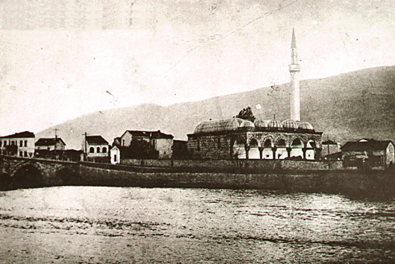
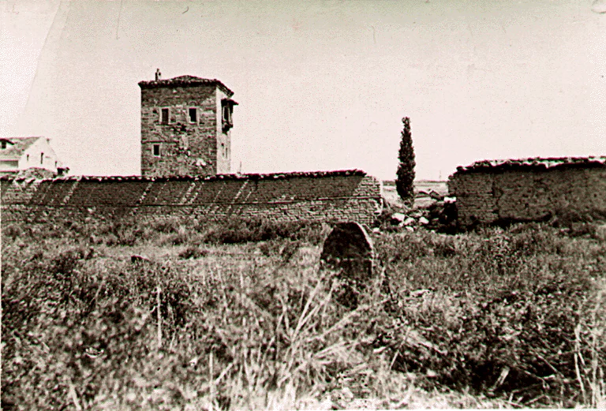
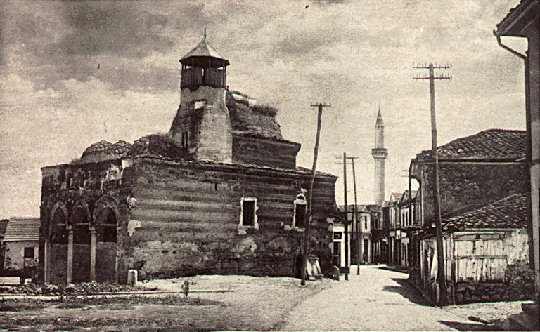
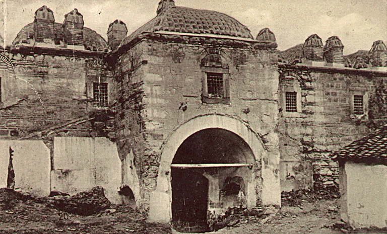
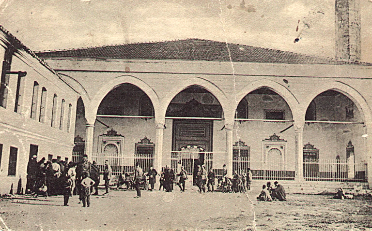
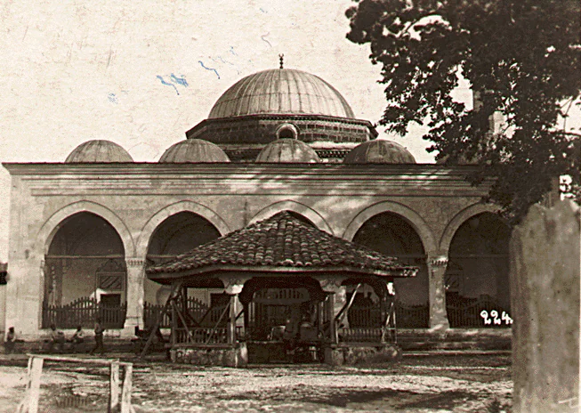

Дескрипција
Бурмали џамија, фотографирана околу средината на 19 век. Единствената џамија на десната страна р.Вардар. Се наоѓала веднаш до Камениот мост. Името го добила по спиралното (бурмали) стебло на нејзиното минаре. Подигната е при крај на 15 век, а срушена е 1925 година, за на нејзино место да се изгради Офицерскиот дом.

Бурмали џамија и неколку изградени објекти околу неа. Неоформена улица. Собиралиште на превезувачи на стока за трговија, со воловски запреги. - крај на 19 век

Бурмали џамија - 1912 - 1918 година. Јужен приод кон Камениот мост со густо нанижани трговско - занаетчиски дуќани.

Бурмали џамија со дел од Камениот мост и шеталиштето покрај неа. Лево од неа се гледаат објектите што биле изградени пред самиот влез на Камениот мост, во кои се наѓале дуќани и занаетчии. - 10-тите години.

Бурмали џамија - почеток на 20-тите години. Пред мостот се забележуваат први киосци за попатен сервис и продажба. Киосците имаат нагласена архитектура во деталите т.е. обликувањето на покривите.

Бурмали џамија - 1920 година.

Хатунџук џамија со турбето. Во позадина се гледа минарето на Јахја пашина џамија. Хатунџук џамија датира од 1511 година. Градителката на оваа џамија е Хани Хатун, една од ќерките на Јахја паша. Името на џамијата, Хатунџук, во превод значи мала госпоѓа (дама) или госпоѓица. - крај на 19 век.

Хаџи Балабан џамија. Се наоѓа на просторот помеѓу Куршумли ан и Дуќанџик џамија. Подигната е во 15 век. (крај на 19 век)

Бегова кула (или Феудална кула). Оваа кула му припаѓала на некој бег. Се наоѓа пред главниот влез на денешниот дом на армијата на Р.Македонија. Непознат периодот на нејзиното подигање, но се претпоставува дека е подигната на крај на 17 век или почетокот на 18 век. Фотографијата е од 19 век.

Беговата кула на крај на 19 век.

Беговата кула на почеток на 20 век.

Беговата кула, 10-тите години.

Стара Казанџилер џамија, во непосредна близина на Куршумли ан. Подигната во 15 век, а позната како џамија на казанџиите. (денес не постои)

Дуќанџик џамија, изградена во средината на 16 век.

Куршумли ан, изграден во средината на 16 век. Преставува монументален објект на исламската профана архитектура. Се наоѓа во старата скопска чаршија, веднаш до денешниот Музеј на Македонија.

Саат кулата и Султан Муратова џамија - 20-тите години. Саат кулата е подигната во средината на 16 век (1566-1572 година), како прва Саат кула на Османлиската држава. Саатниот механизам и мајстор, кој требал да се грижи за него, се донесени од Сигет - Унгарија, по заземањето на градот Сигет од Турците. Султан Муратова џамија. Султанот Мурат II, таткото на Султан Мехмед Освојувач, во 1436 година ја подигнал оваа џамија како своја задужбина.

Султан Муратова џамија 10-тите години.

Саат кула и Султан Муратовата џамија - 20 тите години.

Саат кула и Султан Муратовата џамија - 20 тите години.

Саат кула и Султан Муратовата џамија - 20 тите години.

Саат кула и Султан Муратовата џамија - 20 тите години.

Гази Иса бегова џамија - 20-тите години. Подигната од Иса бег, син на Исхак Бег, кој ја подигнал џамијата по смртта на неговиот татко како задужбина. (15 век)

Гази Иса бегова џамија - 20-тите години. Подигната од Иса бег, син на Исхак Бег, кој ја подигнал џамијата по смртта на неговиот татко како задужбина. (15 век)

Гази Иса бегова џамија - 20-тите години. Подигната од Иса бег, син на Исхак Бег, кој ја подигнал џамијата по смртта на неговиот татко како задужбина. (15 век)

Гази Иса бегова џамија - 20-тите години.

Турските гробишта, а во позадина е Гази Иса беговата џамија - 20-тите години.

Гази Иса бегова џамија - дворот - 20-тите години.

Гази Иса бегова џамија - дворот - 20-тите години.

Мустафа пашина џамија - 20-тите години. Подигната е 1492 година од тогашниот заповедник Мустафа паша.

Мустафа пашина џамија - 20-тите години. Подигната е 1492 година од тогашниот заповедник Мустафа паша.

Мустафа пашина џамија - 20-тите години.

Мустафа пашина џамија, во позадина, а под неа делумно се гледа Паша Јигит бегова џамија, која била најстара џамија во Скопје. (денес не постои) - 20-тите години.

Улица во стариот дел на градот, а во позадина е Исхак беговата џамија или Алаџа џамија. Оваа џамија ја подигнал заповедникот на Скопје Исхак бег (син на Паша Јигит бег - освојувачот на Скопје), во првата половина на 15 век, 1438 година. Покрај џамијата, како своја задужбина, подигнал уште турбе , медреса, конаци и згради кои и припаѓаат на исламската профана архитектура. 1519 година џамијата е преправана и додадени се двата странични брода, од страна на Мехмед, внук на Исхак бег - 20-тите години.
Ориентација

На старата ориентациона карта
Фото албум


Тема
 Аквадукт4 разгледници
Аквадукт4 разгледници Кале30 разгледници
Кале30 разгледници Мостови60 разгледници
Мостови60 разгледници Кеј58 разгледници
Кеј58 разгледници Плоштад46 разгледници
Плоштад46 разгледници Објекти66 разгледници
Објекти66 разгледници Христијански храмови19 разгледници
Христијански храмови19 разгледници Муслимански објекти33 разгледници
Муслимански објекти33 разгледници Офицерски дом29 разгледници
Офицерски дом29 разгледници Театар28 разгледници
Театар28 разгледници Железничка станица13 разгледници
Железничка станица13 разгледници Училишта36 разгледници
Училишта36 разгледници Паркови12 разгледници
Паркови12 разгледници Пазари18 разгледници
Пазари18 разгледници Улици38 разгледници
Улици38 разгледници Панорама I60 разгледници
Панорама I60 разгледници Панорама II30 разгледници
Панорама II30 разгледници Колажи55 разгледници
Колажи55 разгледници Поплави9 разгледници
Поплави9 разгледници Земјотрес27 разгледници
Земјотрес27 разгледници Скопје 200026 разгледници
Скопје 200026 разгледници